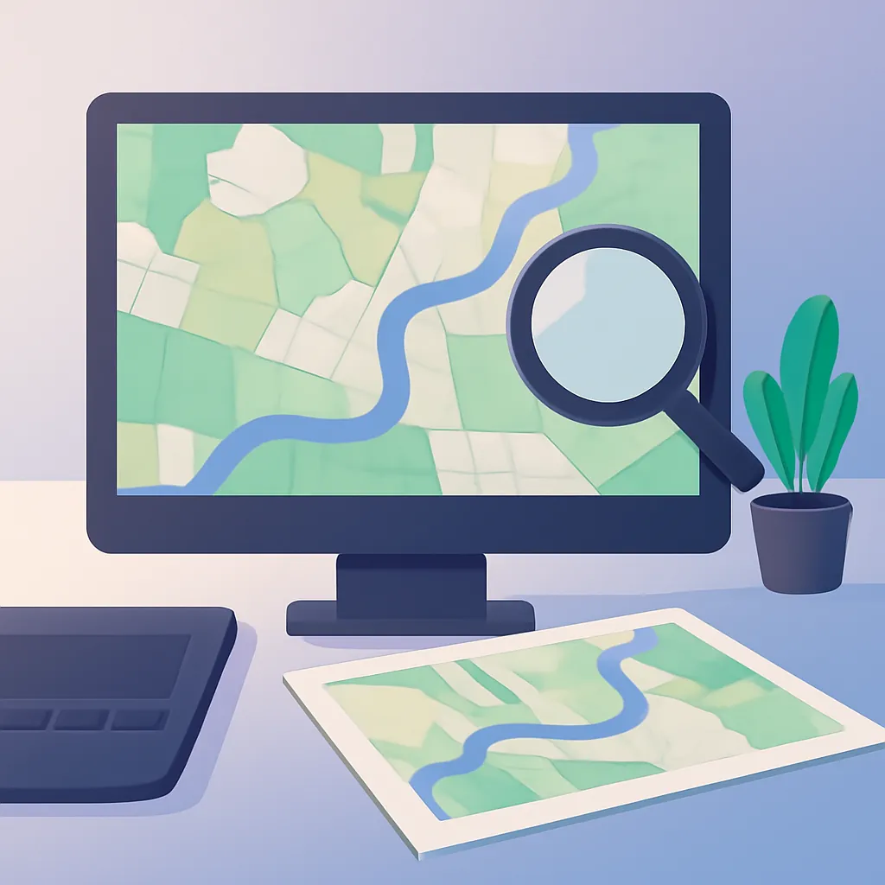

QGIS로 시작하는 무료 GIS 첫걸음

대학 시절, 강의실에서 지도 제작 과제를 준비하던 기억이 납니다. 당시엔 GIS 프로그램이 고가의 상용 소프트웨어로만 존재해서, 실습실 컴퓨터에 의존할 수밖에 없었습니다. 몇 년이 지난 지금, QGIS 같은 오픈소스 GIS 소프트웨어의 등장은 많은 것을 바꿨습니다. 예전과 달리 누구나 무료로 지도 제작의 세계에 첫걸음을 뗄 수 있게 된 것이죠.
QGIS 설치와 기본 환경 설정
QGIS를 처음 접하는 분이라면, 설치 과정이 그 출발점이 됩니다. QGIS는 공식 웹사이트에서 Windows, MacOS, Linux용 다운로드가 가능합니다. 설치 후 첫 화면을 보시면 툴바와 좌측의 레이어 패널, 중앙의 맵 캔버스를 확인할 수 있습니다. 익숙해지면 로딩 속도나 인터페이스가 직관적이라는 걸 알게 됩니다. 특히 OSM(Open Street Map) 등 다양한 베이스맵을 플러그인으로 손쉽게 추가할 수 있어, 초심자도 복잡한 데이터 없이 베이스맵을 얹는 작업을 시작할 수 있습니다.
설정 초기에 꼭 맞춰야 할 것은 프로젝트 CRS(Coordinate Reference System)입니다. 사용 지역의 좌표계가 맞지 않으면 원하는 위치로 데이터가 나타나지 않거나 왜곡될 수 있습니다. 처음 이 부분에서 당황하는 경우가 많으니, 프로젝트의 기본 CRS를 설정하는 것을 잊지 마세요.
실습: 간단한 지도 제작
관건은 데이터를 불러와 시각적으로 표현하는 작업입니다. 예를 들어, CSV 파일로 저장된 특정 지역의 인구 데이터를 사용한다고 합시다. '레이어 추가'에서 '구분자로 분리된 텍스트 레이어 추가'를 선택하여 CSV 파일을 불러올 수 있습니다. 이때 '지오메트리 정의'에서 X 필드에 경도(longitude), Y 필드에 위도(latitude)를 지정하는 것이 중요합니다.
불러온 데이터가 맵 캔버스에 표시되면, 데이터를 시각적으로 구분하기 위한 스타일 지정이 필요합니다. QGIS의 스타일 설정 기능은 매우 강력합니다. 데이터에 따라 색깔을 달리하거나, 사이즈를 조정할 수 있습니다. 이를 통해 인구 밀집도를 색상으로 표현한다거나 특정 구역을 강조할 수 있습니다. QGIS의 장점 중 하나는 이러한 과정이 사용자의 시각적 감각에 크게 의존하지 않는다는 점입니다. 준비된 템플릿이나 스타일을 적용해 손쉽게 시작할 수 있으니까요.
주의할 점: 데이터의 신뢰성과 처리 능력
데이터가 아무리 손쉽게 불러와진다고 해도, 그 출처와 정확성을 무시해서는 안 됩니다. GIS가 데이터 시각화를 통해 인사이트를 제공할 수 있지만, 잘못된 데이터는 대형 오판을 초래할 수 있습니다. 몇몇 오픈 데이터셋은 최신 정보가 아니거나 중복·결측값이 포함되어 있을 가능성도 있으니, 데이터를 철저히 검토하고 정리해 사용하는 것이 중요합니다.
또한 QGIS는 오픈소스이지만, 복잡한 분석 작업에서는 성능 저하를 경험할 수 있습니다. 특히 대규모 데이터셋을 다룰 때는 사양이 좋은 컴퓨터에서 사용하는 것이 좋습니다. 이는 상용·오픈소스를 막론하고 GIS 소프트웨어 전반에 나타나는 문제로, 하드웨어에 따른 대응이 필요합니다.
QGIS를 통한 GIS의 첫걸음은 그리 어렵지 않습니다. 걸림돌은 대개 소프트웨어 사용법보다 데이터의 품질이나 범위에서 옵니다. 그래서 자신만의 데이터를 구축하고 유지하는 역량이 곧 가장 든든한 자산이 됩니다. QGIS는 그 시작점으로 부담이 적은 도구이니, 서두를 필요는 없습니다. 천천히, 단계를 밟아가며 자신만의 GIS 데이터를 구축해 나가세요.
ℹ️ 이 글은 생성형 AI로 작성되었습니다. 대표 이미지도 AI로 생성했습니다. 법령·수치·일정 등은 관계 기관의 원문(법령, 고시, 보도자료)으로 확인하시기 바랍니다.